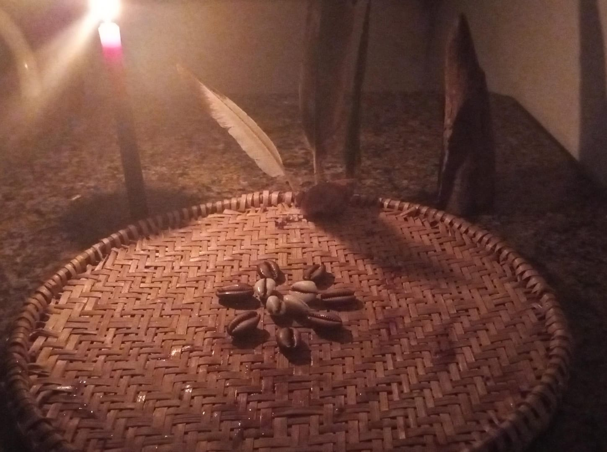

Consulta com oráculo de Quimbanda A consulta ao oráculo de Quimbanda é um processo ritualístico realizado para obter orientação espiritual, conselhos ou respostas para questões específicas. Na Quimbanda, assim como em outras tradições afro-brasileiras, o oráculo pode ser consultado através de diferentes métodos, sendo os mais comuns! Para mais informações Whatsapp:15996791956
